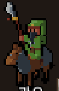

부관 칸 4안: 3번 틀 + 주장 일러스트 좌하단 + 상단 병종
제안대로: 카드 맨 위는 병종(중기병), 도트(주장)는 가운데, 좌하단은 주장 일러스트, 우하단은 부관 일러스트를 같은 도트 계단 틀로. 이름은 각 일러스트 안 아래에. 일러스트와 도트가 같은 카드에 모이므로 "누구인지"는 일러스트가 맡고 도트는 병종·무기를 보여 줍니다. 평소(어둡게)·선택·마우스(밝게)·부관 없음(＋)입니다.
중기병


장비
평소
중기병
장비
주장 선택(주장 밝음)
중기병
장비
부관 선택·마우스(부관 밝음)
좋은 점: 장수 식별은 항상 일러스트로 되고, 도트는 병종 그림 그대로 써서 고유 도트가 없는 장수도 문제없음. 좌우 대칭이라 "주장 / 부관"이 한눈에 읽힘. 고려할 점: 카드 하단 약 96px을 일러스트 두 칸이 쓰므로 도트가 쓸 높이가 줄어, 카드 높이를 약 20px 키워야 하고(124→약 144) 한 화면에 보이는 줄 수가 약간 줄어듭니다. 또 일러스트 두 칸이 카드 안에 들어가 겹침이 없습니다.